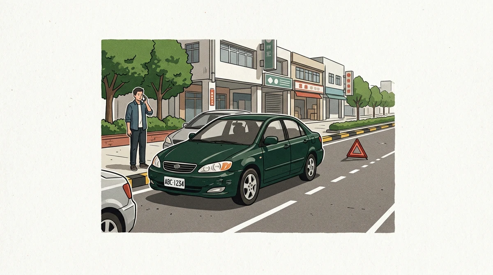
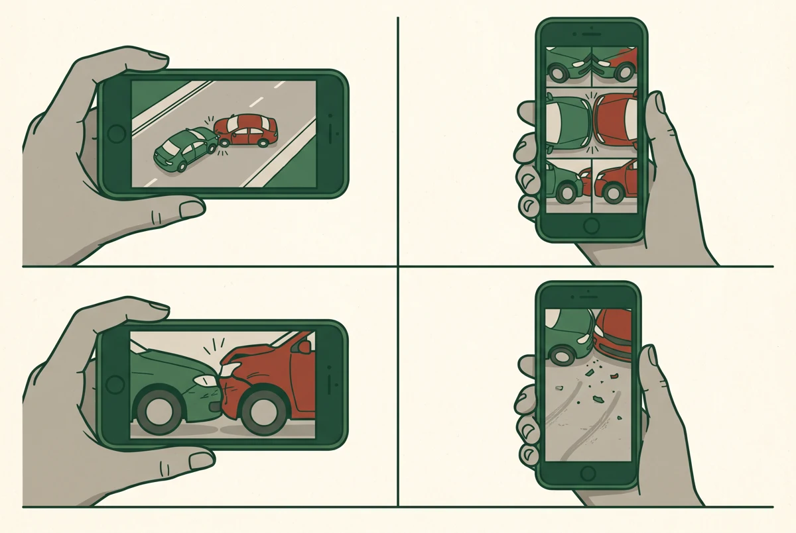

記住順序：安全 → 求援 → 蒐證 → 移車
1
先顧人開警示燈、離開危險車道
2
再求援有人受傷 119；事故報警 110
3
後蒐證全景、位置、碰撞點、車損
互動檢查表
現場七步驟
完成一項就勾一項

蒐證不要漏
拍照用「遠、四角、近、跡」
- 遠：道路全景把路口、號誌、標線、兩車位置一起拍進去。
- 四角：兩車相對位置從前後左右斜角拍，讓人看得懂行進方向。
- 近：碰撞點與車損先拍碰撞關係，再各自拍清楚受損部位。
- 跡：地面與散落物煞車痕、碎片、油漬、刮痕都要保留位置感。
提醒
先保存行車記錄器原始檔，避免循環錄影覆蓋；不要只用通訊軟體壓縮後的影片。
離開現場後
理賠與資料時間軸
接下來照時間做
事故當日
保存所有原始檔
照片、行車記錄器、對話、聯單、醫療與交通單據集中備份。
5 日內
通知承保保險公司
先完成出險通知，依公司指示準備資料；修車前先確認是否需要勘車。
7 日後
申請現場圖與照片
可向警察機關申請，核對警方保存的事故現場資料。
30 日後
申請初步分析研判表
這是警方初步意見，不等於法院最終肇責判定。
報警話術
我要報交通事故。地點在＿＿＿，行進方向是＿＿＿，共有＿＿輛車，目前＿＿＿人受傷／無人受傷，車輛＿＿＿可以／無法移動。